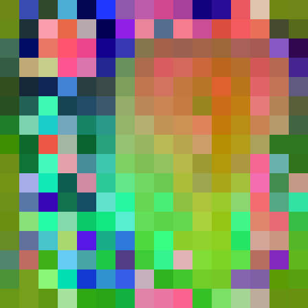
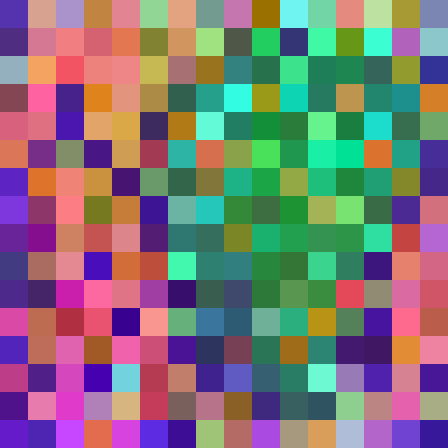
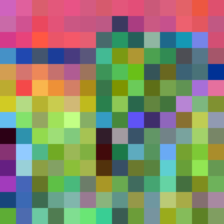
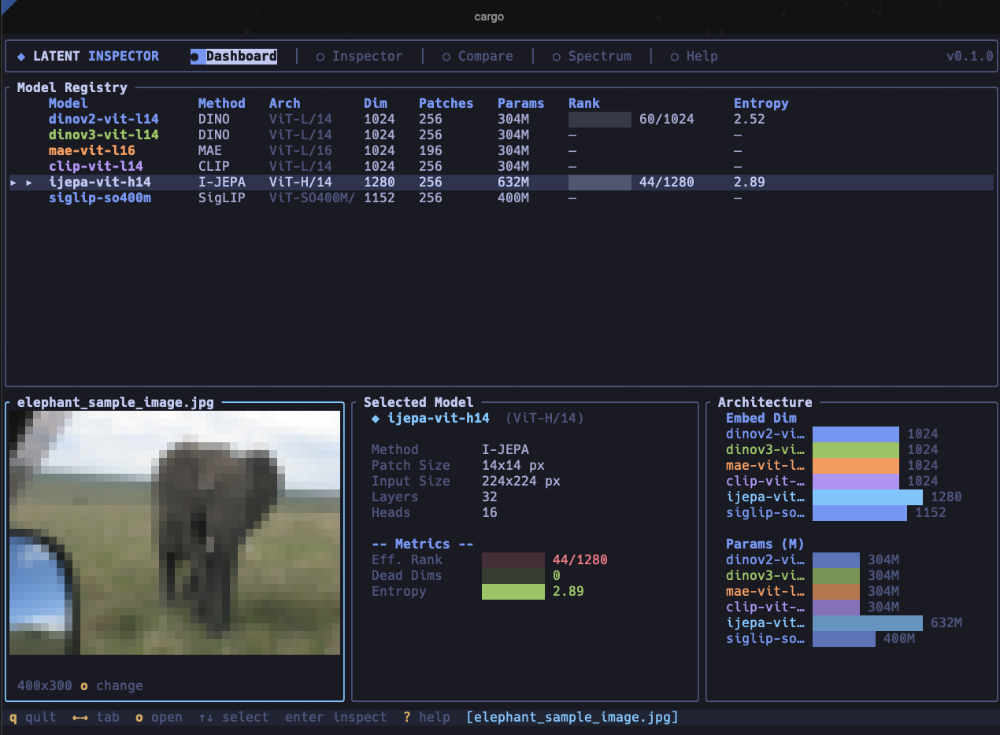
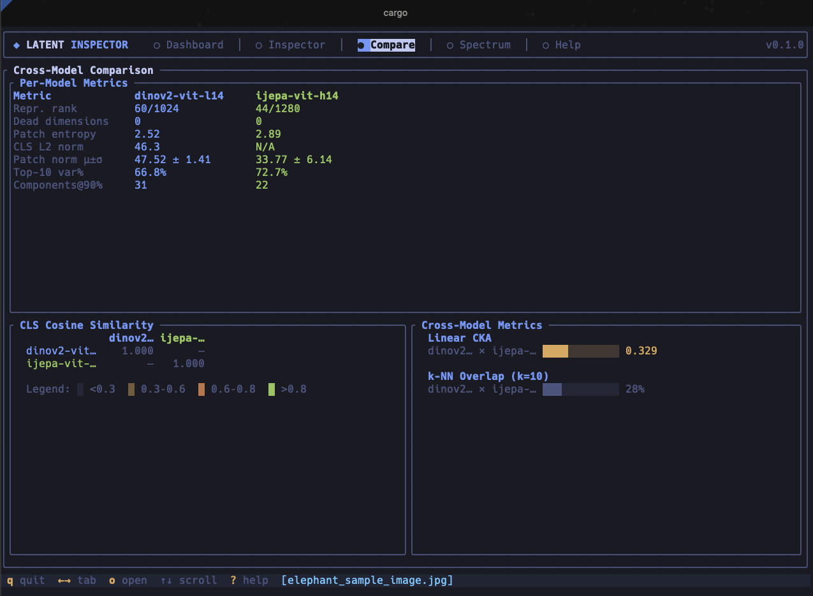
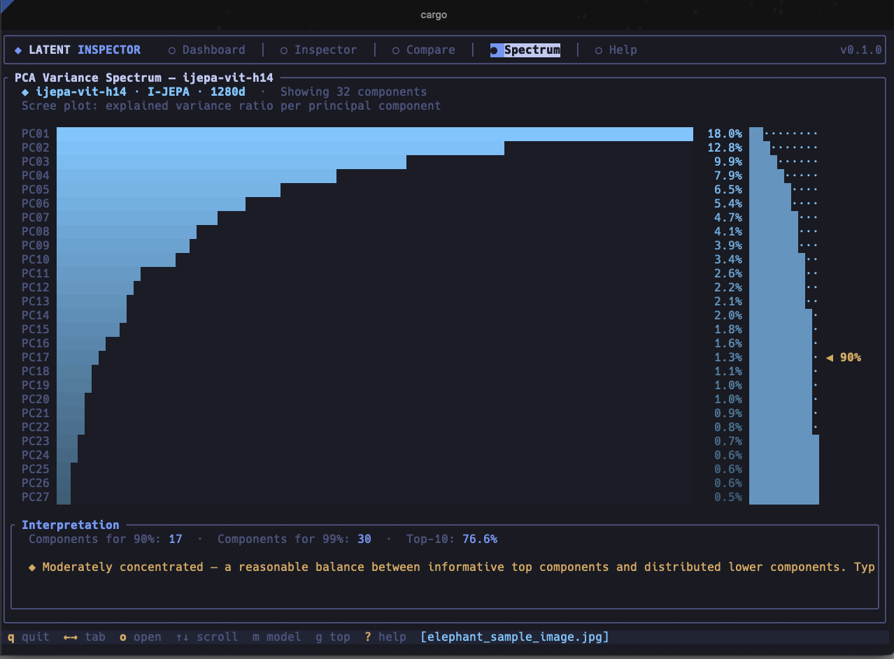

DINOv2

Large coherent object-level zones. Strong semantic grouping.
Compare how modern self-supervised vision backbones internally represent the same image.
This first Space is a static visual overview of the tool and findings. Interactive compare mode can come next.
The same elephant image produces very different internal geometries depending on the training objective. That is the whole point of latent-inspector: to make representation differences visible and measurable.
Large coherent object-level zones. Strong semantic grouping.

Finer local variation. More contextual structure per patch.

Structured continuity shaped by video-aware training.

Sharper, more compact geometry from proxy-distilled training.
Per-model: effective rank, dead dimensions, patch entropy, isotropy, uniformity, variance concentration, spatial coherence.
Cross-model: CKA alignment, k-NN overlap, and other geometry comparisons where the architecture supports it.
Why it matters: world-model and perception work lives or dies by latent-space quality. If the representation is weak, every downstream system inherits the weakness.
Most people talk about SSL models at the paper-summary level. latent-inspector makes the differences concrete on a real image and gives you metrics, not just intuitions.
It is especially good for:



Static first was the right call. The fastest next upgrade is not more prose — it is a short demo video and a tighter report preview. After that, build a second Space or v2 with a small interactive compare surface.